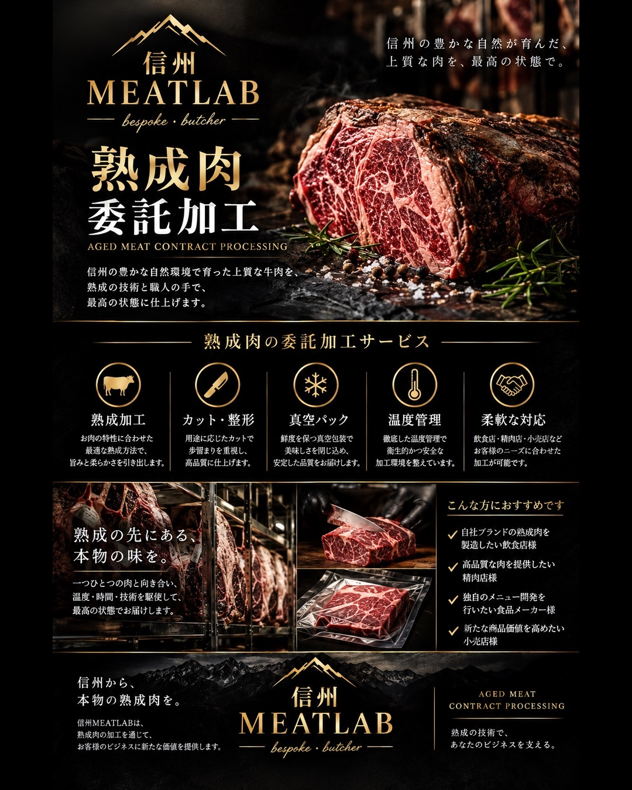
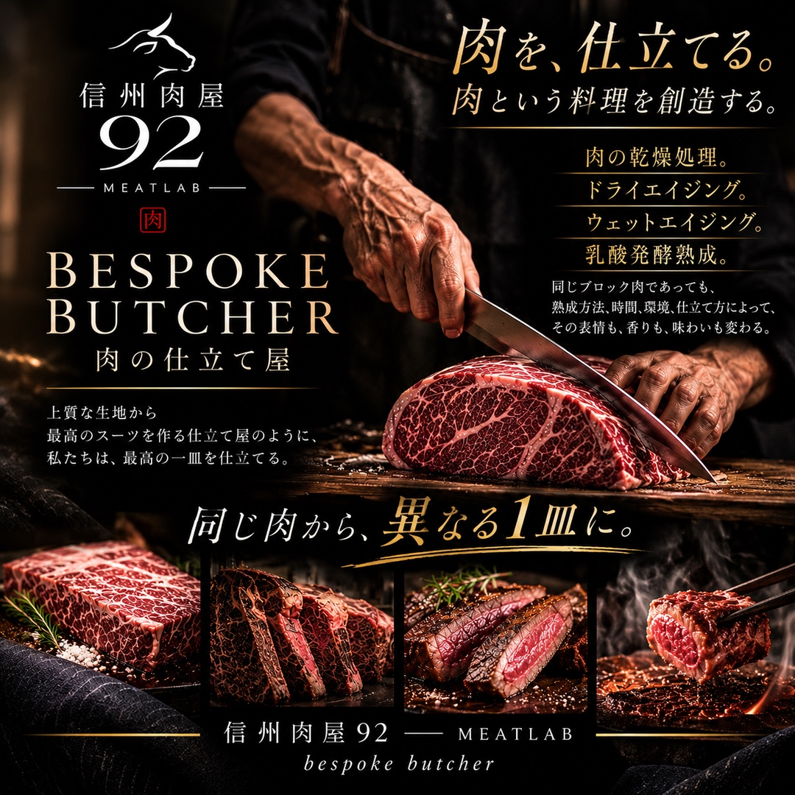
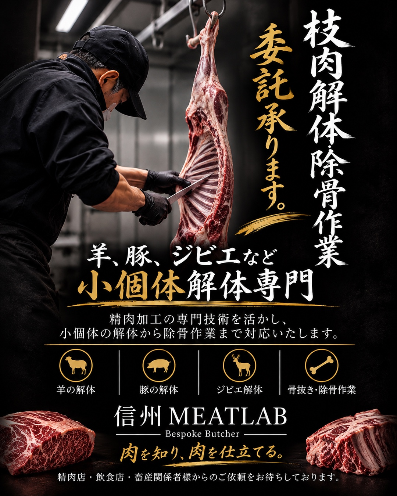
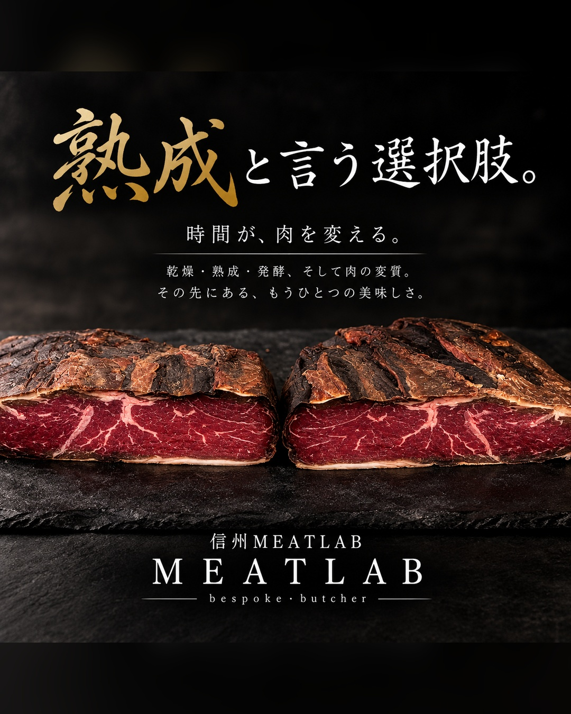
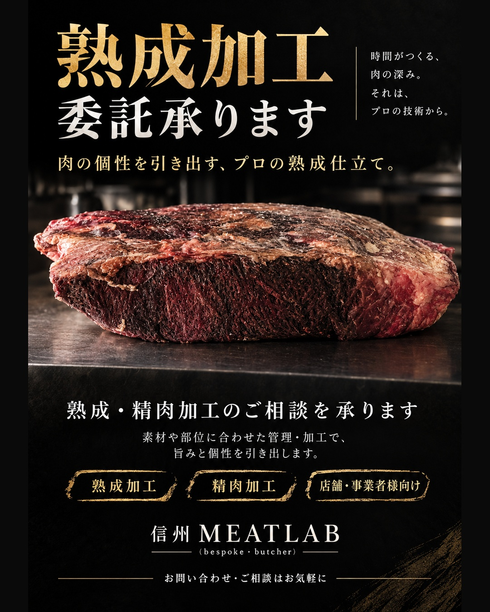
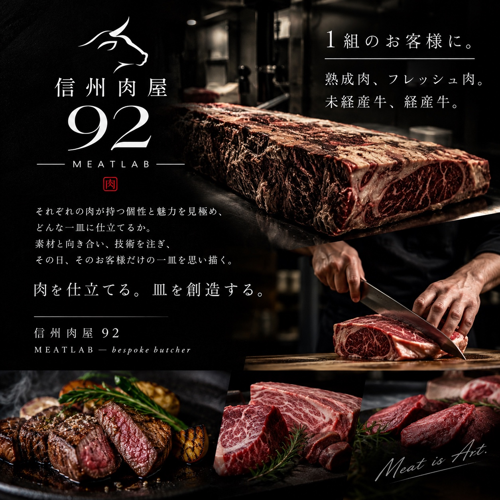

01
熟成肉 委託加工
ドライエイジング、ウェットエイジングなど、肉の特性や仕上がりの方向性に応じた加工をご相談いただけます。
素材の個性を見極め、熟成・加工・仕立てを考える。
肉という素材に、もうひとつの可能性を。
上質な生地から一着のスーツを仕立てるように。信州MEATLABは、肉の状態や用途に向き合い、熟成や加工という選択肢を通じて、素材の魅力を引き出すことを目指します。
飲食店・精肉事業者など、事業者様からのご相談を想定しています。対応内容や受託条件は個別に確認いたします。
ドライエイジング、ウェットエイジングなど、肉の特性や仕上がりの方向性に応じた加工をご相談いただけます。
肉の用途を考えたカット、下処理、仕立てのご相談。素材と提供方法に合わせた可能性を探ります。
羊・豚・ジビエなどの小個体を中心に、枝肉解体や除骨作業の委託をご相談いただけます。
飲食店・精肉店などの事業者様向けに、加工内容や進め方を個別にご相談いただくための窓口を準備しています。



乾燥処理、ドライエイジング、ウェットエイジング、乳酸発酵熟成。工程の選び方で、肉の表情は変わります。



肉の種類・量・ご希望の加工内容などをお知らせください。
対応可否、条件、加工の方向性を個別に確認します。
双方で条件が整った場合、具体的な進行をご案内します。
熟成肉の委託加工、肉の仕立て、事業者様からのご相談について。お問い合わせ方法は現在準備中です。